A picture-by-picture walkthrough for Android — first connecting a source, then using the app. Every screenshot on this page is the real app running against a real Jellyfin server and a real NAS; nothing is mocked up.
Jump to your device
Phone guide — connecting a source and using every screen. The setup steps are the same on every device, so start here whichever you own.
Tablet guide — the same app with a layout that uses the extra width.
Android TV — the 10-foot interface, driven by the remote.
What Ultimate Player is
Ultimate Player is a video player for media you already own. It ships no content of its own and streams nothing from us. You point it at a media server or a network share you control, and it builds a browsable library from what it finds there — with artwork, cast, ratings, subtitles and resume positions.
What it can connect to
Media servers — Jellyfin and Plex. Libraries, artwork and watch state come from the server, and your playback progress is reported back to it.
Network shares — SMB (NAS boxes, Windows shares, macOS file sharing), FTP, NFS and WebDAV. The app scans the share, identifies the files and fetches artwork and metadata.
On the device — a folder on your phone, a direct URL, or titles you have downloaded for offline playback.
What it does with them
A grouped library with films and TV shows separated and episodes gathered under their series · artwork, synopses, cast and ratings from TMDB and OMDb · subtitle search and download · resume across every device signed in to the same server · offline downloads · Picture in Picture · and a 10-foot interface on Android TV.
Just want to look around first?
1Open the app
On first launch a short walkthrough points out the main parts of the app. It never blocks the screen — you can keep scrolling and tapping while it is up, step through it with Next, or dismiss it any time with the ✕.
You can replay it later from Settings → Replay walkthrough.
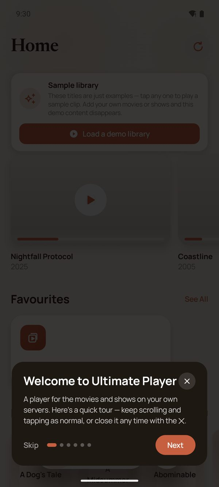
2The sample library
Behind it, Home shows a sample library. Those titles are placeholders so the app isn't empty while you look around — they disappear the moment you add a real source.
If you want to see the app working properly before wiring up your own server, tap Load a demo library.
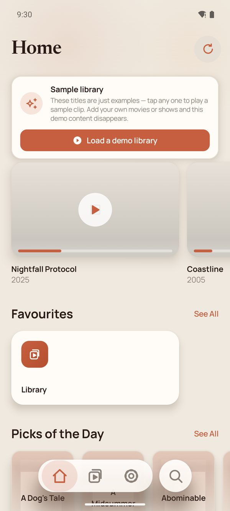
3The demo library
One tap connects the app to the public Jellyfin demo server. No account, no password and nothing to configure. Home fills with real titles, a Continue Watching row and a Next Up row, and everything in the app becomes explorable — including playback.
Reviewers: this is the quickest way to evaluate the app without a media server of your own. It connects exactly like any other Jellyfin source, so what you see is the real product, not a special mode. It retires itself automatically as soon as you add a source of your own, and comes back if you remove them all.
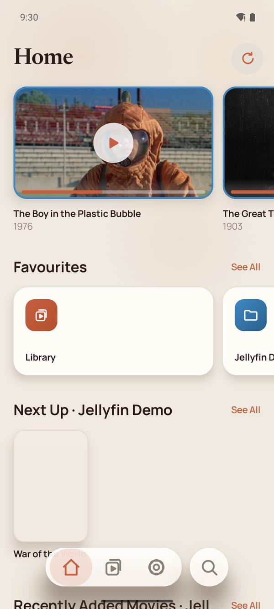
Connecting your own source
Everything starts in the same place: Settings → Add Files. From here you can add a share, connect a media server, paste a direct URL, or reach your downloads.
1Open Add Files
Go to the Settings tab and tap Add Files. The Locations group is where new sources are added; Saved Shares below it lists what you have already connected.
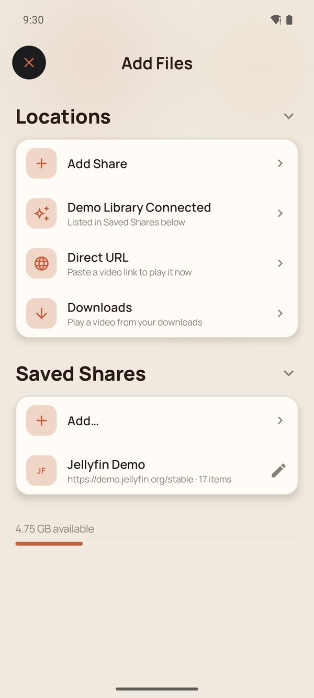
2Let the app find your server
Tap Add Share. The app scans your local network and lists what it finds under On Your Network — media servers and SMB hosts alike. Tapping one pre-fills its address for you.
Below that, Local Shares, Network Shares and Media Servers let you add a source by hand if it isn't discoverable.
Discovery takes a few seconds to fill in — "Searching your network…" is not a failure. Some networks (guest Wi-Fi, and many corporate ones) block discovery traffic entirely; in that case type the address in by hand, which does not depend on discovery at all.
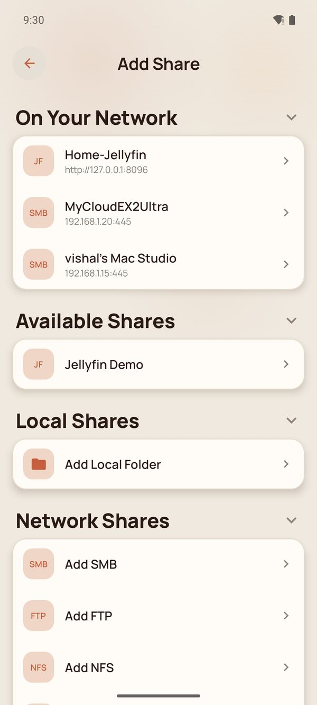
Option A — a media server (Jellyfin or Plex)
3Enter the server address
Picking a discovered server fills in its display name and address for you. Add the username and password for your account on that server — these are your Jellyfin or Plex credentials, not an Ultimate Player account. There is no such thing as an Ultimate Player account.
The address can also be a remote one — a reverse-proxy domain such as
https://jellyfin.example.com, or a Tailscale name — if you want to reach your server
from outside the house.
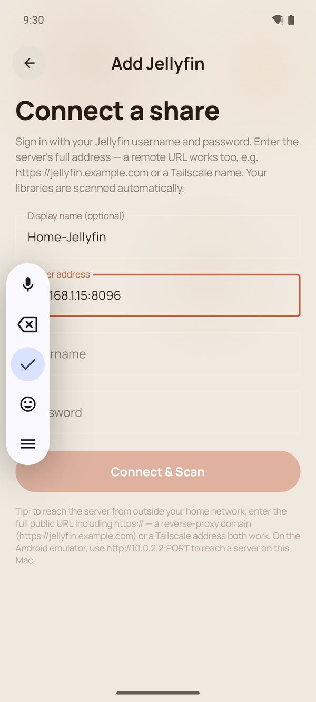
4Connect and scan
With the details filled in, tap Connect & Scan. The app signs in, reads your libraries and builds the browsable library, then drops you back on Home. A media server hands over its own artwork, so titles appear with posters straight away.
The password is never shown again after you type it, and it is stored encrypted on the device.
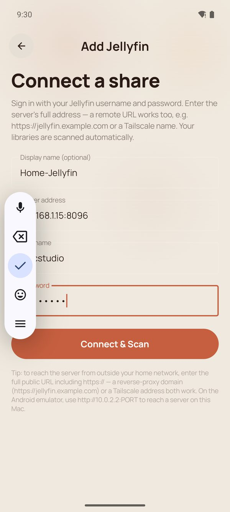
5Confirm it worked
Back in Settings, each connected source gets a live status card: a green Live dot when the server is reachable, and a breakdown of what was found — files, movies, shows and unidentified "others". The circular arrow rescans that source.
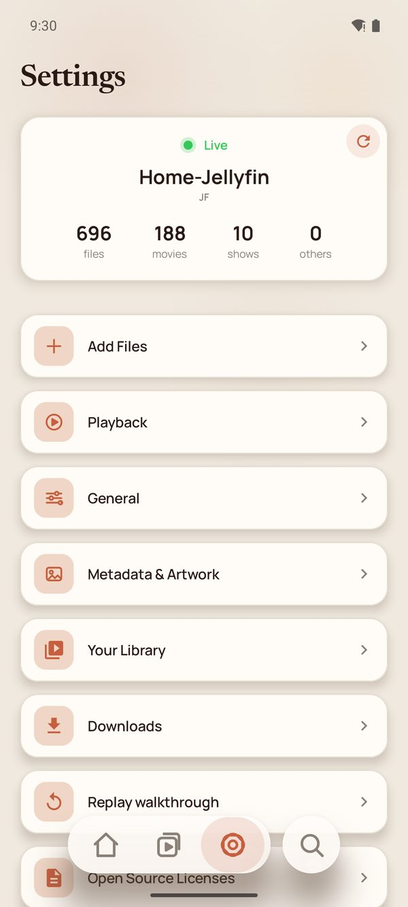
6Home is yours now
The demo library retires itself, and Home leads with your own content — what you were watching, what's next, and rows drawn from your server.
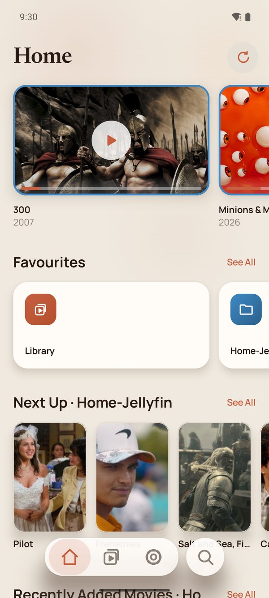
Option B — a network share (SMB, FTP, NFS or WebDAV)
A share has no notion of a library, so the app scans the files itself and then identifies them. SMB is shown here; the others use the same form with a different port.
3Fill in the share details
Choose your NAS under On Your Network, or Add SMB under Network Shares. The fields are:
- Display name — optional; what you want to call it in the app.
- Host / IP — your NAS or PC address, e.g.
192.168.1.20. - Port — 445 for SMB unless your server uses a custom one.
- Share name — the shared folder to scan, e.g.
Movies. - Folder path — optional; a sub-folder inside the share, to narrow the scan.
- Username / Password — leave both empty to connect as a guest.
- Domain — only for Windows-domain networks; leave blank otherwise.
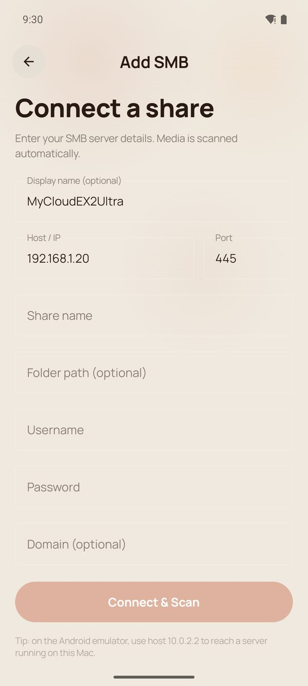
4Connect & Scan
The app connects, walks the share and identifies what it finds. The file scan takes seconds; identifying the titles against TMDB then runs in the background, and Home's top bar shows Scanning… while it does. Your files are listed by name straight away and the artwork fills in behind them, so you never wait on a blank screen.
One share per folder. If your media is split across
Movies and TVShows, add each as its own share — repeat this step with
the other share name. They appear as separate sources but merge into one library.
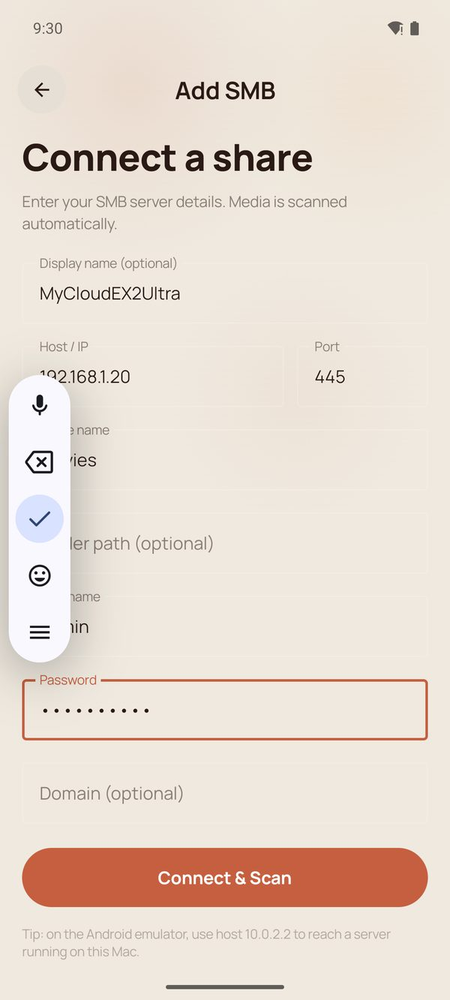
5Both sources connected
Settings now carries a card per source. A server and a share sit side by side and merge into one library — the app doesn't care where a title came from.
Shares from the same host are named after the share itself, so MyCloudEX2Ultra · Movies and MyCloudEX2Ultra · TVShows stay easy to tell apart.
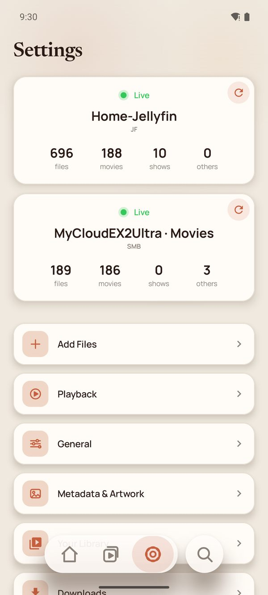
Managing your sources
Tap the pencil beside any saved share for its actions:
- Edit — change the address or credentials.
- Refresh — look for new files.
- Re-fetch all metadata — fetch artwork and details again.
- Clear metadata — discard what was fetched and start over.
- Remove share — disconnect it and drop its titles from the library.
Removing a source never touches the files on your server or NAS — it only disconnects it here.
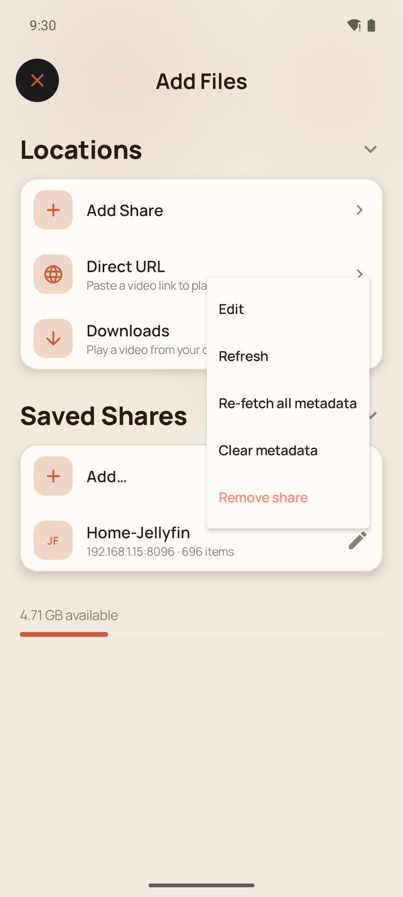
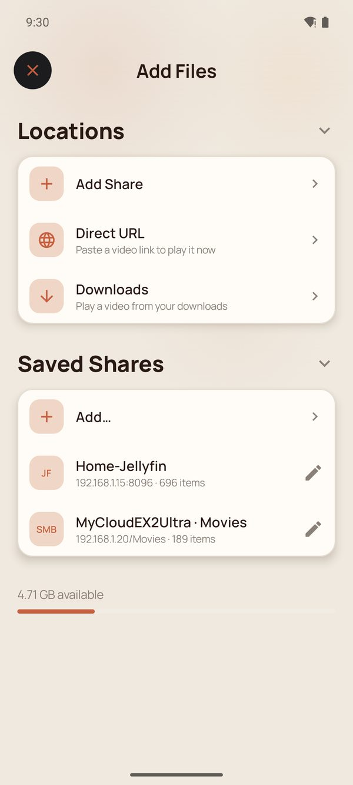
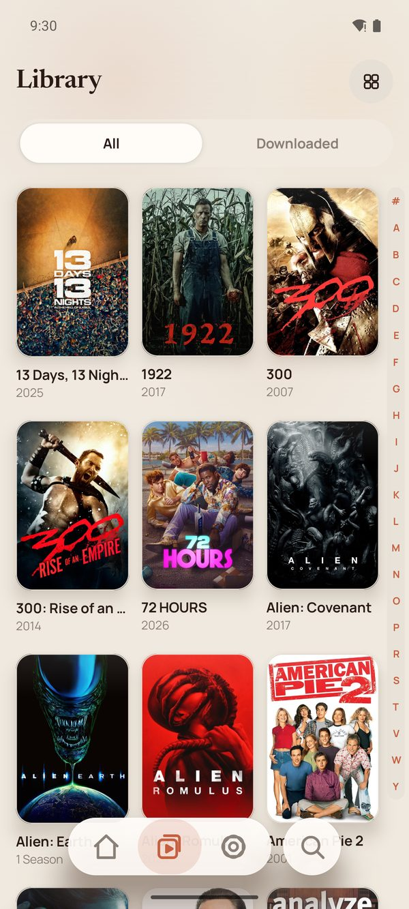
Finding your way around
Four tabs sit in the pill at the bottom of the screen: Home, Library, Settings and Search.
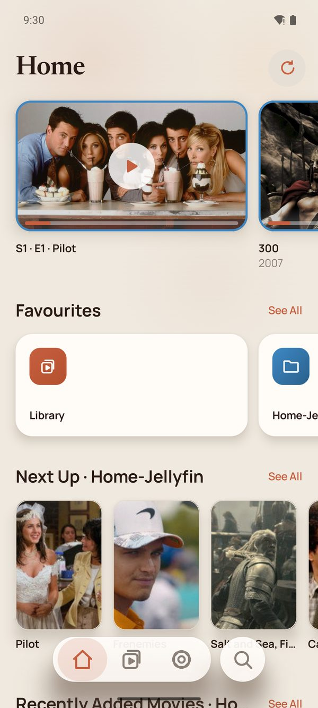
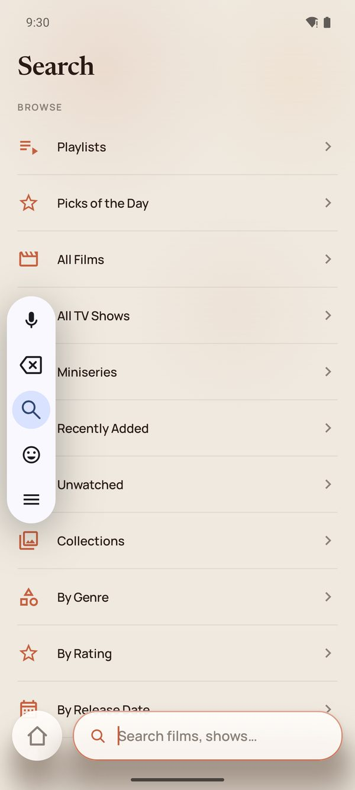
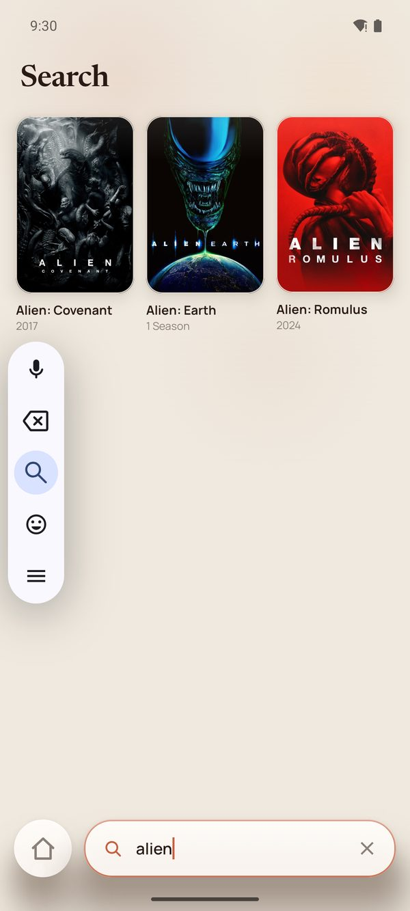
A film
Tap any poster for its detail page: artwork, runtime, release date, certification, genres, synopsis, ratings from TMDB, IMDb, Rotten Tomatoes and Metacritic, and the cast.
The row of buttons under Play covers marking watched, downloading for offline, your watchlist, adding to a list, and your own rating. The ⋯ button at the top right holds the rest, including Edit Metadata for anything the app identified wrongly.
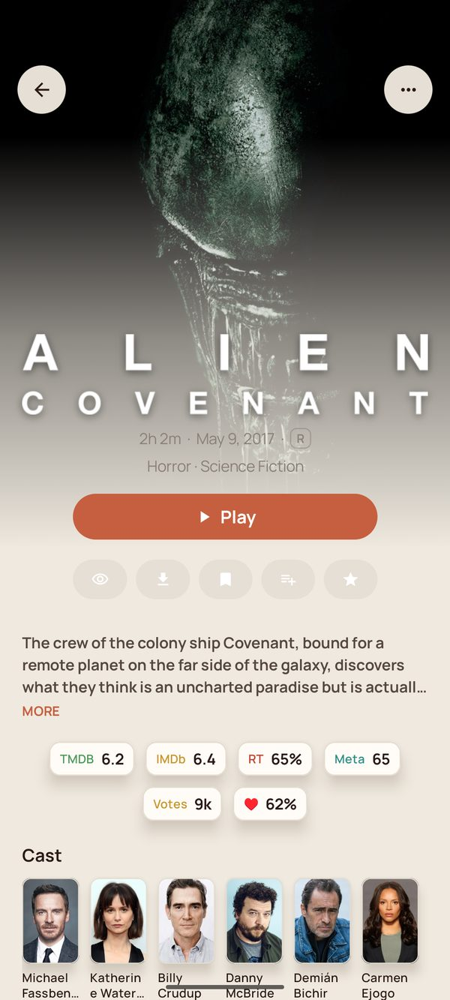
A TV show
A series opens on the episode you are most likely to want next — the one you were part-way through, or the one after the last you finished. The season selector and episode strip run along the bottom; tapping an episode retargets the Play button without leaving the page.
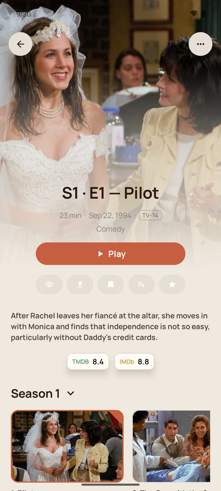
The player
Tap once to show or hide the controls. You get a scrubber with the current position and total runtime, skip buttons either side of play/pause, and along the bottom edge: playback settings (subtitles, audio track, speed, quality), casting, and file information. Top left closes the player, switches aspect ratio and starts Picture in Picture; top right locks the screen against stray taps.
Two things worth knowing: tap the time on the right to switch between total runtime, time remaining, and the clock time the film will finish. And when a title has intro or credits markers, a Skip chip appears at the right moment.
Playback streams directly from your server or share — nothing is copied to the device unless you explicitly download it. Position is saved continuously, so leaving mid-film and coming back resumes where you were.
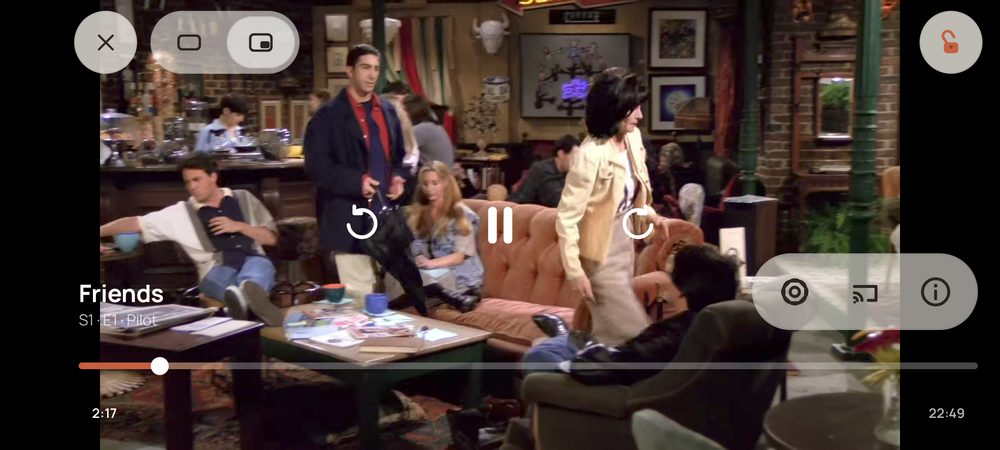
Picking up where you left off
Leave a title part-way through and its Play button becomes Resume with the exact position. The same title also appears in Continue Watching on Home. With a Jellyfin or Plex server that position is reported back to the server, so it follows you to other devices — and anything you watch elsewhere shows up here.
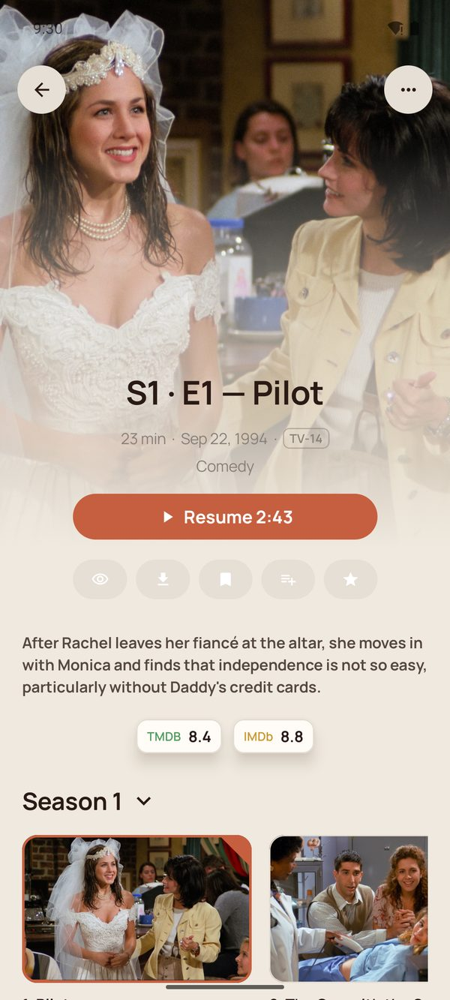
Settings, screen by screen
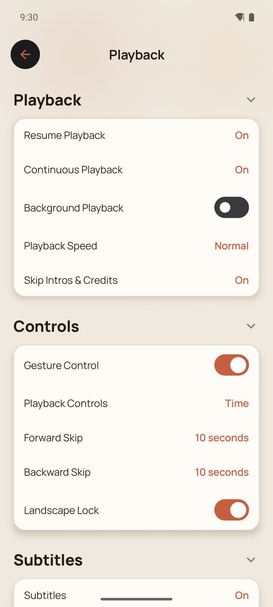
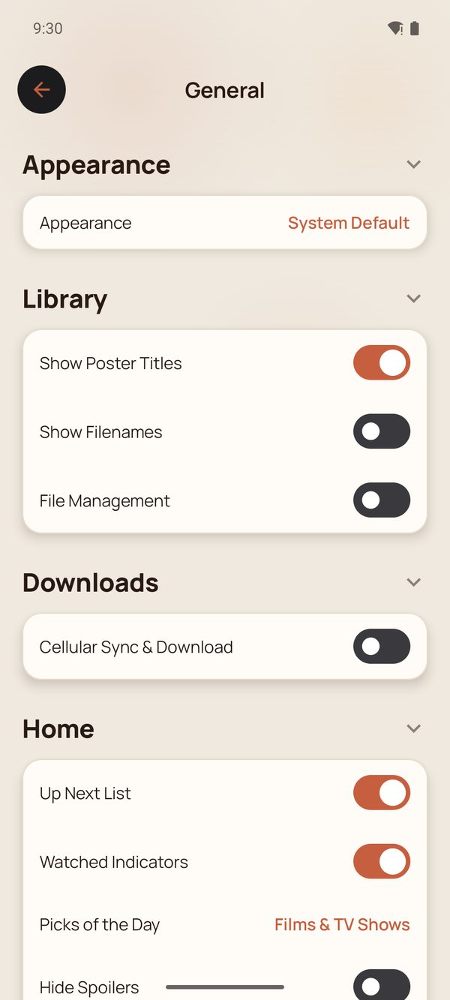
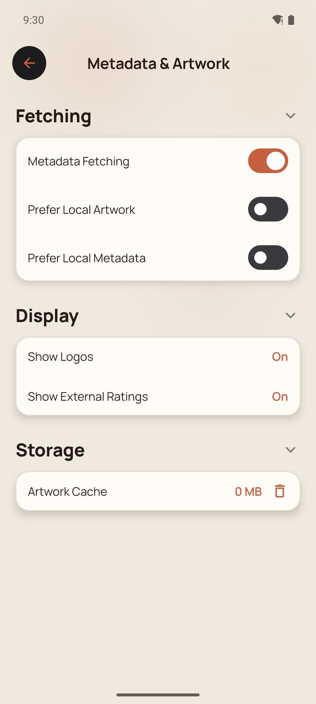
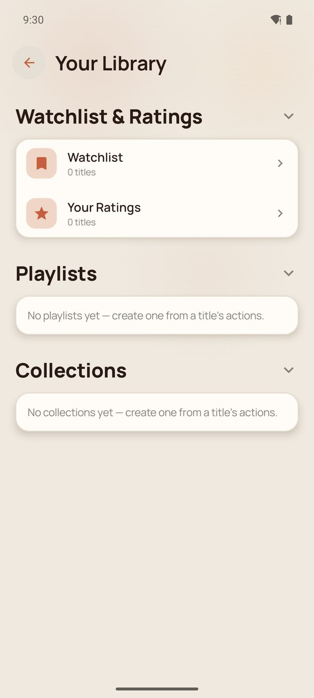
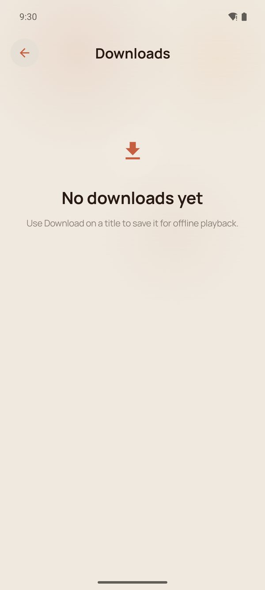
Turning Metadata Fetching off stops the app contacting TMDB and OMDb entirely. Your files are still listed — by filename — and still play; they just won't have posters or synopses.
On a tablet
Everything above applies, with a layout that uses the extra width. The steps and field names are identical, so follow the phone guide and expect this shape.
Home and Library
Rows show more per screen and the poster grid goes wider — six across on a large tablet in landscape — with the same A–Z jump rail down the side.
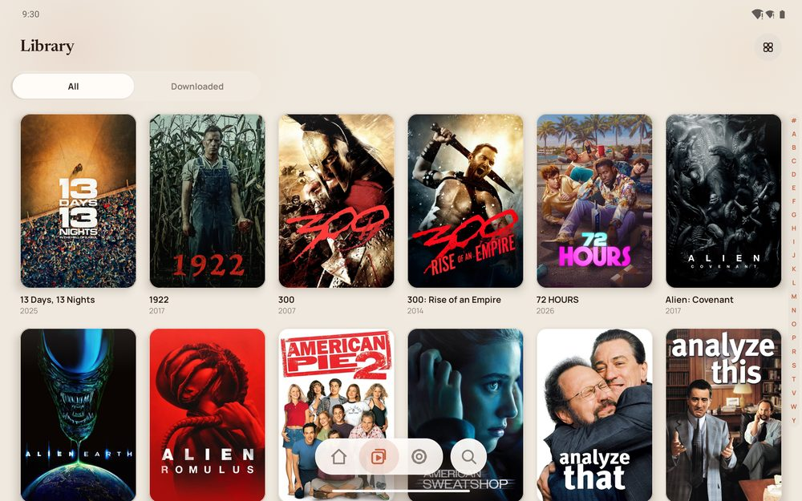
Settings is two panes
On a wide screen Settings splits: the list of sections on the left, the selected section open beside it, so you can move between Playback, General and the rest without going back and forth.
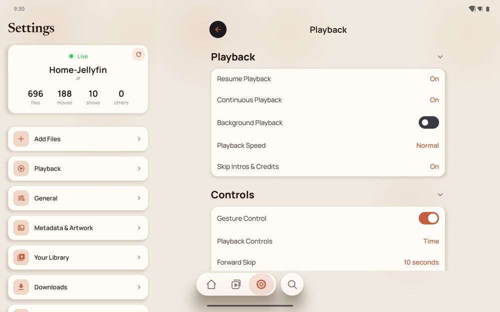
Home
The Continue Watching row leads with larger cards, and the Favourites shortcuts and per-source rows sit beneath exactly as they do on a phone.
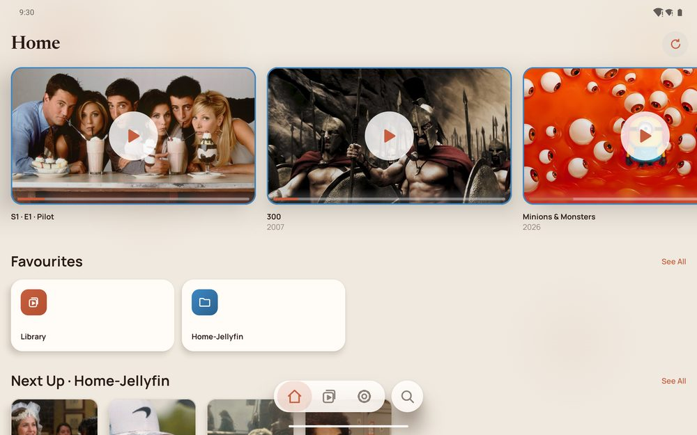
On Android TV
The same app, installed from the Play Store on an Android TV or Google TV device, switches to a 10-foot interface built for a remote rather than a touchscreen: a side navigation rail for Home, Library, Search and Settings, large focusable cards that grow as you move across them, and a player driven by the D-pad.
Setting up a source works the same way — Settings → Add Files → Add Share, pick a discovered server or type its address with the on-screen keyboard, then Connect & Scan. Because typing a password on a remote is unpleasant, Jellyfin servers can also be signed into with Quick Connect: the TV shows a short code, and you approve it from any device already signed in to your Jellyfin.
Everything else — resume across devices, subtitle download, skip intro, the same library — behaves as described above.
If something goes wrong
My server doesn't appear when I scan
Give discovery a few seconds to fill in. Then confirm the phone and the server are on the same network — a phone on mobile data can't see your NAS, and a VPN on either end will usually break discovery. Some networks block the discovery traffic entirely; in that case type the address in by hand under Network Shares or Media Servers, which doesn't depend on discovery.
It connects but no videos appear
Check the share name is the shared folder itself rather than a path inside it, and that the account you used can read that folder. If the share holds sub-folders, leave Folder path empty so the whole share is scanned. The status card in Settings shows what the scan actually found.
Titles show up as "others"
"Others" means the file was found but no provider could identify it. Give metadata fetching a
moment to catch up — a large share takes a while — then use Re-fetch all metadata
on the source. Files identify far more reliably when named Title (Year) for films and
Show S01E02 for episodes. Anything that stays unidentified is still playable, and you
can fix it by hand with Edit Metadata.
A video won't play, or stalls partway
Ultimate Player bundles extra decoders for audio formats Android often lacks (Dolby AC-3/E-AC-3 and DTS), but a few exotic combinations still need transcoding. On a Jellyfin or Plex server, use the Quality item in the player's settings to have the server transcode instead of playing the original file. Very high-bitrate 4K files over Wi-Fi can also outrun the connection — lower the quality, move closer to the router, or download the title for offline playback first.
Subtitles are missing or out of sync
Subtitles embedded in the file and sidecar .srt files beside it are both picked up
automatically. If there are none, open the player's settings button and use Download
subtitles… to search online. Size, colour and background are in Settings →
Playback → Subtitles.
Getting in touch
If none of the above helps, see the Support page for how to reach us. It helps enormously to include the app version from Settings, the kind of server or share you are connecting to, your Android version and device, and what you expected to happen.